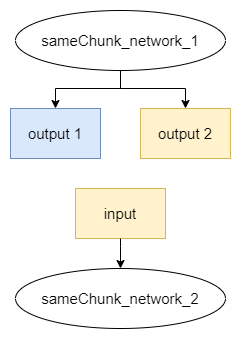
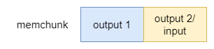
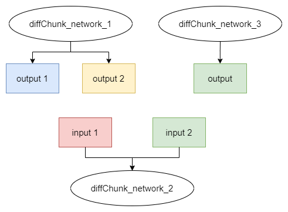
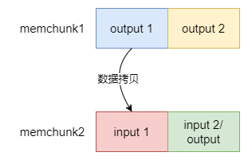

Icraft XRT: multiNetwork#
对于多网络输入输出相连的应用场景，Icraft XRT提供的内存管理机制和接口可用于实现内存优化策略， 主要核心思想是通过输入和输出复用同一块内存区域，实现多网络相连的同时还优化了内存空间。 对于部分多输出和多输入的网络，存在无法完全内存复用的情况，但也可以通过数据拷贝的方式实现多网络相连。
一 工程配置#
1.1 Demo结构#
在上面的工程结构中：
diffChunk是必须通过数据拷贝实现多网络相连的demo，包含c++和python工程sameChunk是复用同一片内存区域实现多网络相连的demo，包含c++和python工程
1.2 编译生成#
以上工程文件属于 Icraft-Demo 工程的一部分，具体的编译生成方法请参考 Icraft-Demo 的编译生成的说明。
二 Demo说明#
对于不同网络，Icraft XRT API的使用流程也不尽相同，但可以分类为 复用同一个内存块 和 数据拷贝 两种方式。 为了便于用户深入理解多网络相连应用场景下的内存复用，更好得使用Icraft XRT的API，这里对Demo进行详细说明。
2.1 sameChunk demo#
该demo的应用场景如图所示， sameChunk_network_1 作为第一个网络，有两个输出，其中第二个输出是第二个网络 sameChunk_network_2
的输入，这种情况网络2的输入可以复用网络1的第二个输出的内存区域。

备注
这里复用的输入和输出是指在etm上的数据。
复用后的内存块如下图所示，memchunk 同时作为网络1输出段和网络2输入段对应的内存块

该demo在 samples/xrt/multiNetwork/sameChunk.cpp 中调用Icraft XRT的C++ API完成了多网络输入输出相连，
并且考虑了从 sameChunk_network_2 中间拆分hardop，其输入与 sameChunk_network_1 输出内存复用的复杂情况，
这种需要关闭mmu使用，且不能使用合并后或者内存优化后的网络。主要实现如下：
//网络2使用view，从网络中间拆分hardop，其输入与网络1输出复用
//这种在网络中间拆分hardop进行内存复用的情况需要关闭mmu使用
device.cast<BuyiDevice>().mmuModeSwitch(false);
//我们要复用网络1的第二个输出对应的内存区域，则需要分配一个较大的内存块，供网络1输出段和网络2输入段使用
//很明显网络1输出段比网络2输入段更大，这里获取该输出段的字节大小，并分配一个连续内存块
auto output_segment = buyi_backend1->logic_segment_map.at(Segment::OUTPUT);
auto output_bytesize = output_segment->byte_size;
auto chunk = device.cast<BuyiDevice>().defaultMemRegion().malloc(output_bytesize);
//网络1第二个输出的逻辑地址减去内存块首地址的大小，作为网络2输入段的偏移，其中6为网络1第二个输出的v_id
auto offset = output_segment->info_map.at(6)->logic_addr - output_segment->logic_addr;
//网络1输出段对应的内存区域为全部内存块，两个输出数据都存放在该内存区域中
//网络2输入段对应的内存区域为部分内存块，输入数据会从内存块的首地址+偏移的位置获取
buyi_backend1.userSetSegment(chunk, Segment::OUTPUT, 0);
buyi_backend2.userSetSegment(chunk, Segment::INPUT, offset);
//session执行前必须进行apply部署操作
sess1.apply();
sess2.apply();
//借助HostBackend的工具函数将输入图片转成Tensor
auto input_tensor = icraft::hostbackend::utils::Image2Tensor(img_file);
//网络1前向
auto outputs1 = sess1.forward({ input_tensor });
//网络2前向，输入的tensor为网络1前向输出中的第二个输出
auto outputs2 = sess2.forward({ outputs1[1]});
该demo在 samples/xrt/multiNetwork/sameChunk.py 中调用Icraft XRT的Python API完成了多网络输入输出相连，主要实现如下：
#网络2使用view，从网络中间拆分hardop，其输入与网络1输出复用
#这种在网络中间拆分hardop进行内存复用的情况需要关闭mmu使用
BuyiDevice(device).mmuModeSwitch(False)
#我们要复用网络1的第二个输出对应的内存区域，则需要分配一个较大的内存块，供网络1输出段和网络2输入段使用
#很明显网络1输出段比网络2输入段更大，这里获取该输出段的字节大小，并分配一个连续内存块
output_segment = buyi_backend1.logic_segment_map[OUTPUT]
output_bytesize = output_segment.byte_size
chunk = device.defaultMemRegion().malloc(output_bytesize)
#网络1第二个输出的逻辑地址减去内存块首地址的大小，作为网络2输入段的偏移，其中6为网络1第二个输出的v_id
offset = output_segment.info_map[6].logic_addr - output_segment.logic_addr
#网络1输出段对应的内存区域为全部内存块，两个输出数据都存放在该内存区域中
#网络2输入段对应的内存区域为部分内存块，输入数据会从内存块的首地址+偏移的位置获取
buyi_backend1.setUserSegment(chunk, OUTPUT, 0)
buyi_backend2.setUserSegment(chunk, INPUT, offset)
#session执行前必须进行apply部署操作
sess1.apply()
sess2.apply()
#借助HostBackend的工具函数将输入图片转成Tensor
input_tensor = Image2Tensor(img_file,-1,-1)
#网络1前向
outputs1 = sess1.forward([ input_tensor ])
#网络2前向，输入的tensor为网络1前向输出中的第二个输出
outputs2 = sess2.forward([ outputs1[1] ])
2.2 diffChunk demo#
该demo的应用场景如图所示， 网络1 diffChunk_network_1 有两个输出，网络3 diffChunk_network_3 有一个输出，
网络2 diffChunk_network_2 有两个输入，网络2的第一个输入是网络1的第一个输出，第二个输入是网络3的输出。
这种情况无法分配一块连续的内存区域，可以满足所有网络的需求，因此只能分配多个内存块，通过数据拷贝的方式实现多网络输入输出相连。
其中网络2的第二个输入和网络3的输出可以进行内存复用，以相同颜色表示，其余不能复用的内存区域以不同颜色表示。

备注
这里复用的输入和输出是指在etm上的数据。
分配得到的内存块如下图所示， memchunk1 作为网络1输出段对应的内存块， memchunk2 作为网络2输入段和网络3输出段对应的内存块。

该demo在 samples/xrt/multiNetwork/diffChunk.cpp 中调用Icraft XRT的C++ API完成了多网络输入输出相连，主要实现如下：
//我们首先复用网络3输出对应的内存区域，和"sameChunk.cpp"中的步骤基本一致
//分配一个较大的内存块，供网络3输出段和网络2输入段使用，这里获取网络2输入段的字节大小，并分配一个连续内存块
auto input_segment = buyi_backend2->logic_segment_map.at(Segment::INPUT);
auto input_bytesize = input_segment->byte_size;
auto chunk = device.cast<BuyiDevice>().defaultMemRegion().malloc(input_bytesize);
//网络2第二个输入的逻辑地址减去内存块首地址的大小，作为网络3输出段的偏移，其中5为该输入的v_id
auto offset = input_segment->info_map.at(5)->logic_addr - input_segment->logic_addr;
//网络2输入段对应的内存区域为全部内存块
//网络3输出段对应的内存区域为部分内存块，输出数据会存放在内存块的首地址+偏移的位置
buyi_backend2.userSetSegment(chunk, Segment::INPUT, 0);
buyi_backend3.userSetSegment(chunk, Segment::OUTPUT, offset);
//session执行前必须进行apply部署操作
sess1.apply();
sess2.apply();
sess3.apply();
//借助HostBackend的工具函数将输入图片转成Tensor
auto input_tensor = icraft::hostbackend::utils::Image2Tensor(img_file);
//网络1前向
auto outputs1 = sess1.forward({ input_tensor });
//网络3前向
auto outputs3 = sess3.forward({ input_tensor });
//此时，网络2的第一个输入需要通过数据拷贝到输入段中，第二个输入通过内存复用已获得
//获得网络2的第一个输入的字节大小，并创建缓存数组
auto input_size = input_segment->info_map.at(2)->byte_size;
auto data = std::shared_ptr<char>(new char[input_size]);
//从网络1输出段的内存块中读取输出数据
auto ouput_chunk = buyi_backend1->phy_segment_map.at(Segment::OUTPUT)->memchunk;
ouput_chunk.read(data.get(), 0, input_size);
//将输出数据写入网络2输入段的内存块中
auto input_chunk = buyi_backend2->phy_segment_map.at(Segment::INPUT)->memchunk;
input_chunk.write(0, data.get(), input_size);
//两个输入都准备完毕，进行网络2前向
auto outputs2 = sess2.forward({ outputs1[0],outputs3[0]});
该demo在 samples/xrt/multiNetwork/diffChunk.py 中调用Icraft XRT的Python API完成了多网络输入输出相连，主要实现如下：
#我们首先复用网络3输出对应的内存区域，和"sameChunk.py"中的步骤基本一致
#分配一个较大的内存块，供网络3输出段和网络2输入段使用，这里获取网络2输入段的字节大小，并分配一个连续内存块
input_segment = buyi_backend2.logic_segment_map[INPUT]
input_bytesize = input_segment.byte_size
chunk = device.defaultMemRegion().malloc(input_bytesize)
#网络2第二个输入的逻辑地址减去内存块首地址的大小，作为网络3输出段的偏移，其中5为该输入的v_id
offset = input_segment.info_map[5].logic_addr - input_segment.logic_addr
#网络2输入段对应的内存区域为全部内存块
#网络3输出段对应的内存区域为部分内存块，输出数据会存放在内存块的首地址+偏移的位置
buyi_backend2.setUserSegment(chunk, INPUT, 0)
buyi_backend3.setUserSegment(chunk, OUTPUT, offset)
#session执行前必须进行apply部署操作
sess1.apply()
sess2.apply()
sess3.apply()
#借助HostBackend的工具函数将输入图片转成Tensor
input_tensor = Image2Tensor(img_file,-1,-1)
#网络1前向
outputs1 = sess1.forward([ input_tensor ])
#网络3前向
outputs3 = sess3.forward([ input_tensor ])
#此时，网络2的第一个输入需要通过数据拷贝到输入段中，第二个输入通过内存复用已获得
#获得网络2的第一个输入的字节大小，并创建缓存数组
input_size = input_segment.info_map[2].byte_size
data = [''] * input_size
#从网络1输出段的内存块中读取输出数据
ouput_chunk = buyi_backend1.phy_segment_map[OUTPUT].memchunk
ouput_chunk.read(str(data), 0, input_size)
#将输出数据写入网络2输入段的内存块中
input_chunk = buyi_backend2.phy_segment_map[INPUT].memchunk
input_chunk.write(0, str(data), input_size)
#两个输入都准备完毕，进行网络2前向
outputs2 = sess2.forward([ outputs1[0],outputs3[0] ])